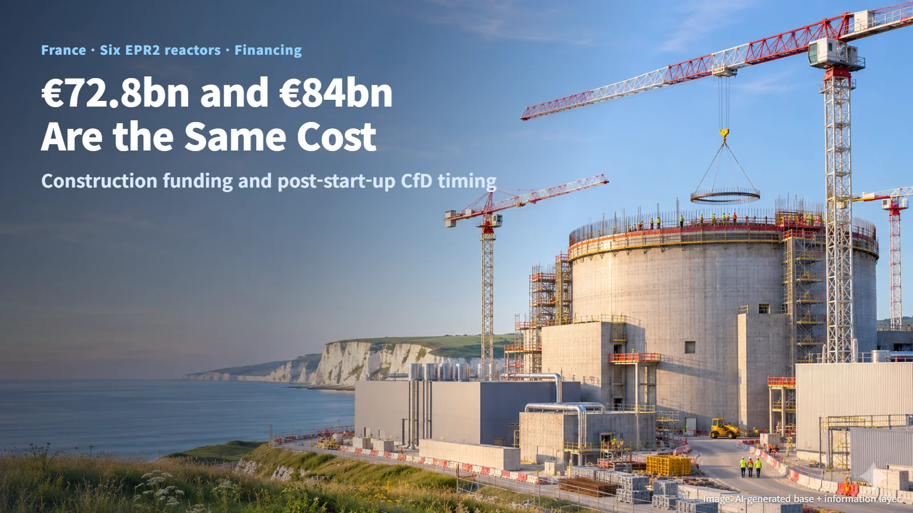
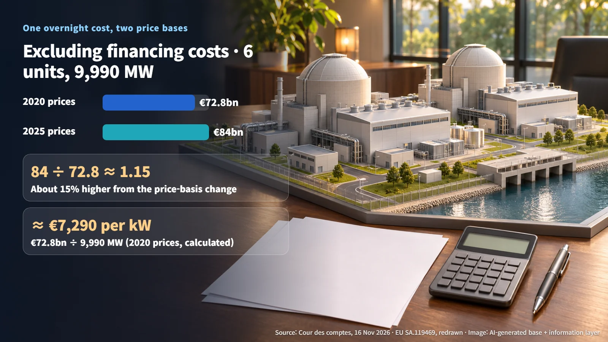
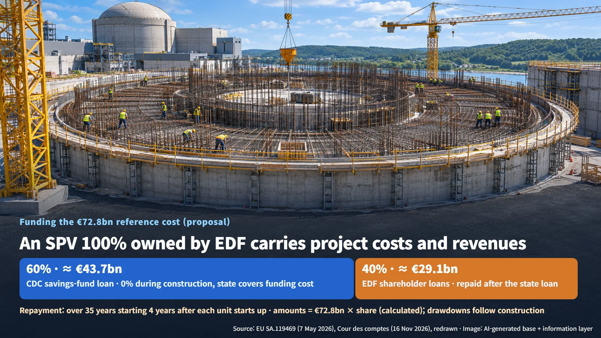
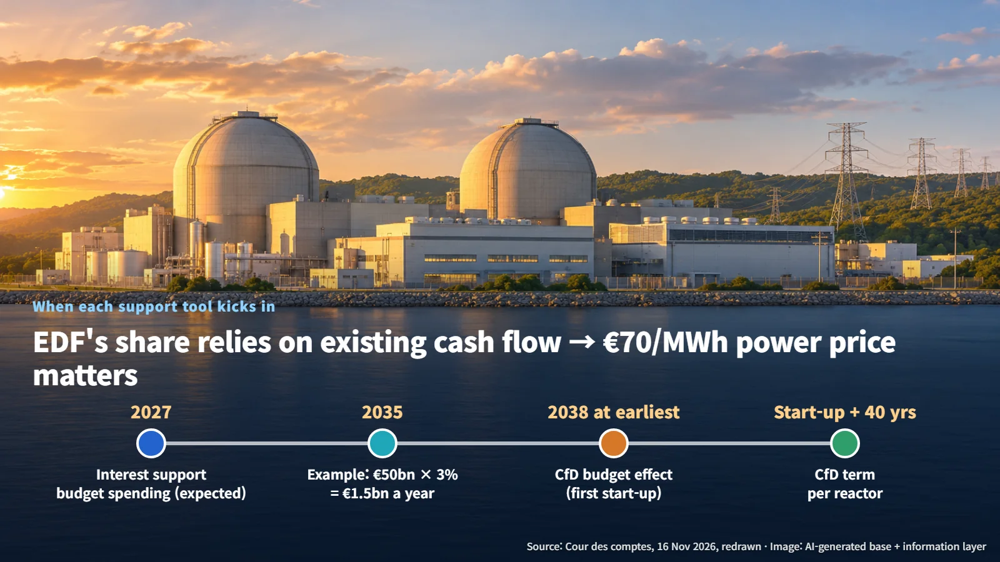

France · EPR2 · Financing
EPR2's €72.8bn and €84bn Are the Same Cost: How France Plans to Fund Six Reactors Before and After Start-up
France's audit court shows the same EPR2 construction cost as €72.8 billion in 2020 prices and €84 billion in 2025 prices, and separates construction-period funding from the 40-year contract for difference that starts with operation.
France's six new reactors usually arrive in the news with a big number attached. Some reports say €72.8 billion, others say €84 billion, and it is natural to wonder whether the budget grew in between. On 16 November 2026, France's Court of Audit (Cour des comptes) published a report on state support for energy production that explains where these numbers come from, and who pays for construction, when, and through which instruments. The clearest way through is to line up the price basis first, then follow the money in the order it arrives.

€72.8 Billion and €84 Billion: One Cost on Two Price Bases
EPR2 (Evolutionary Pressurised Reactor 2) is an improved version of the existing EPR, a pressurised water reactor design. According to the European Commission's state aid investigation document, the programme covers six units at three sites, Penly, Gravelines and Bugey, with a combined capacity of 9,990 MW.
The Court of Audit gives the construction cost as €72.8 billion in 2020 prices and €84 billion in 2025 prices. These are the same cost expressed in the money of two different years. Calculated, 84 ÷ 72.8 ≈ 1.154, so the 2025-price figure reads about 15% higher. To judge whether the real cost has moved, analysts first put both figures on the same price year and then look separately at design changes, quantity growth and schedule effects.
The €72.8 billion is an overnight cost: the cost of the plant as if it were built "overnight", excluding financing costs. It covers construction and engineering, owner's costs, provisions for uncertainty, contingency and schedule risk, and decommissioning-related provisions. Interest is tracked as a separate line. On this basis, a quick calculation gives about 1,665 MW per unit (9,990 ÷ 6) and about €7,290 per kW (€72.8 billion ÷ 9.99 million kW, 2020 prices, excluding financing costs).

On 18 December 2025, EDF announced the €72.8 billion estimate together with a 2026 programme budget of €2.7 billion. The first number describes the full multi-year scope of the programme; the second is the unit used to manage spending within a single year.
60% Public Loan, 40% EDF: The Construction-Period Funding Structure
In the notified structure, a special purpose vehicle (SPV), a company set up to hold the money and contracts of one project, is 100% owned and controlled by Électricité de France (EDF). The SPV handles construction and operating costs and the revenue from generation. EDF owns, builds and operates the reactors and sells the electricity on the market. The purpose is to make the project's cash flows legally and financially traceable on their own.
The proposed split is 60% of the reference construction cost from a subsidised loan and 40% from EDF shareholder loans. Applying those shares to €72.8 billion, the calculation gives about €43.68 billion for the public loan (72.8 × 0.6) and about €29.12 billion for EDF's shareholder loans (72.8 × 0.4). Actual drawdowns follow construction progress year by year. EDF is also described as covering construction-period working capital, VAT, interest on its shareholder loans and part of any cost overruns. The terms of the shareholder loans are to be updated at the final investment decision (FID).
The public loan comes from savings funds managed by France's Caisse des Dépôts et consignations (CDC). Repayment runs for 35 years, starting four years after each reactor begins operation, and at each repayment date EDF's shareholder loans are subordinated to the subsidised loan. In repayment order, the public loan is recovered first and EDF recovers its share afterwards.

Interest Support from 2027, Contracts for Difference from 2038 at the Earliest: When Each Tool Kicks In
The borrowing rate during construction is planned at 0%, with the state covering CDC's funding cost. The Court of Audit expects the first budget outlay for this interest support from 2027. Its own worked example takes an outstanding loan balance of €50 billion in 2035 and an average funding cost of 3%, giving €1.5 billion a year (€50 billion × 3%). As the loan balance builds up with construction, the state's annual interest support grows with it.
A two-way contract for difference (CfD) sets a target price: when the market price is below it, the gap is paid to the generator; when the market price is above it, the excess is clawed back. In the notified structure, the CfD applies to a reference baseload volume for 40 years from each reactor's start of operation. The Court of Audit says the budget impact of the CfD begins at first operation, in 2038 at the earliest.
Placing the tools on one timeline shows the gap. Interest support runs from 2027 through construction; the CfD runs for 40 years from operation starting in 2038 at the earliest; loan repayment runs for 35 years starting four years after operation. Calculated, there are at least 11 years between 2027 and 2038, and during that stretch EDF's share (the 40% plus associated costs) is carried by cash generated from its existing business. A construction delay shifts the spending profile and pushes back the CfD start as well.

The whole support package is under an EU state aid review: the European Commission decided on 31 March 2026 to open an in-depth investigation, and the decision was published on 7 May. The final conditions will be set by the outcome of that review.
Why an Electricity Price of €70/MWh Matters
The Court of Audit found that if electricity prices fall below €70/MWh, EDF's financing needs for EPR2 construction could rise substantially. Because cash from EDF's existing business supports its share of construction costs, lower prices show up first in the group's overall funding capacity.
EDF's 2026 half-year results illustrate the channel. French nuclear output rose, but market prices fell, and EBITDA (earnings before interest, taxes, depreciation and amortisation) dropped from €15.5 billion in the same period a year earlier to €14.1 billion. Calculated, (15.5 − 14.1) ÷ 15.5 ≈ 9.0% lower. The same release reported operating cash flow of €2.6 billion, net investments of €11.4 billion and net financial debt of €51.5 billion at the end of June. The €11.4 billion of net investments covers the existing nuclear fleet, HPC, EPR2 and network investments together, so EPR2 spending draws on the same pool of funds as the group's other investments.
The Court of Audit also set out an option for unfavourable price scenarios: the state could forgo part or all of its cash dividends during construction. In some scenarios, the cumulative fiscal impact over 2026–2040 is about €65 billion, the size of the reduction in the state's dividend income under those scenario conditions. For reference, EDF paid its €1 billion dividend for 2025 on 30 July 2026.
Seen this way, the financing of six EPR2 units becomes much clearer when the question shifts from "how much?" to "when, and from which pocket?". The next milestones to watch are the final decision of the EU state aid review, the shareholder loan terms at FID, and the first interest support outlay in 2027.